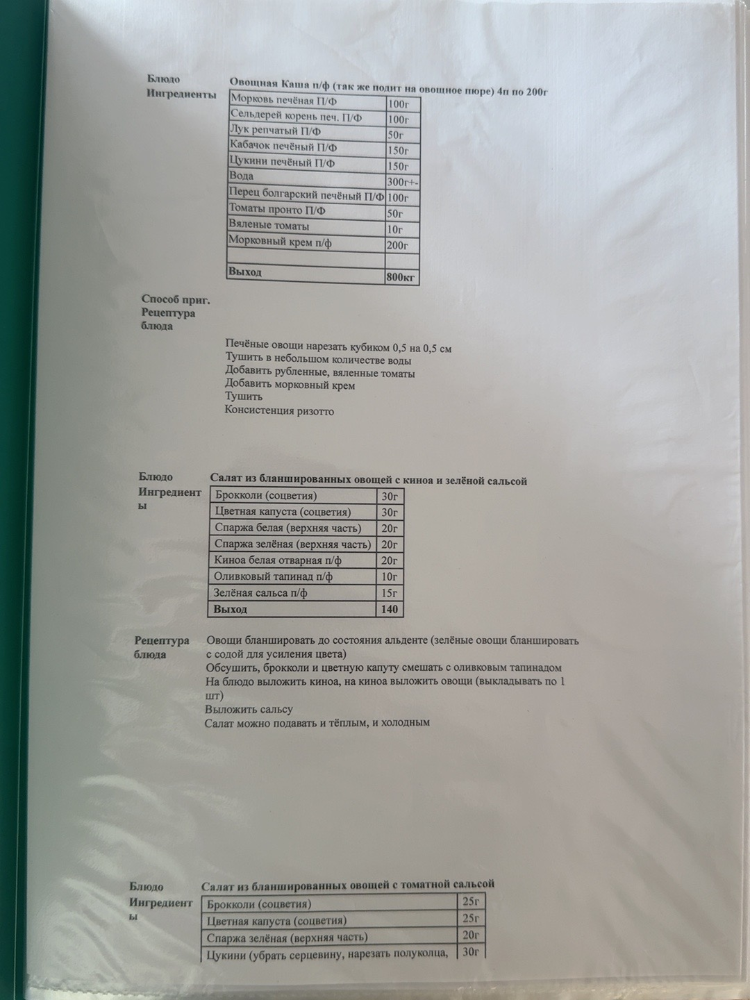

Заготовки · 01
Овощная каша
П/Ф · также подаётся как овощное пюре
Проверить по оригиналуВ строке «Выход» напечатано «800 кг». Заголовок указывает 4 порции по 200 г. Уточните выход перед использованием; количество воды в источнике — 300 г ±.
Ингредиенты
| Наименование | По рецептуре |
|---|---|
| Морковь печёная П/Ф | 100 г |
| Сельдерей, корень печёный П/Ф | 100 г |
| Лук репчатый П/Ф | 50 г |
| Кабачок печёный П/Ф | 150 г |
| Цукини печёный П/Ф | 150 г |
| Вода | 300 г ± |
| Перец болгарский печёный П/Ф | 100 г |
| Томаты пронто П/Ф | 50 г |
| Вяленые томаты | 10 г |
| Морковный крем П/Ф | 200 г |
Граммовки по исходной рецептуре. П/Ф — полуфабрикат.
Приготовление
- Печёные овощи нарезать кубиком 0,5 × 0,5 см.
- Тушить в небольшом количестве воды.
- Добавить рубленые вяленые томаты.
- Добавить морковный крем.
- Тушить до консистенции ризотто.
Оригинал · страница 01
